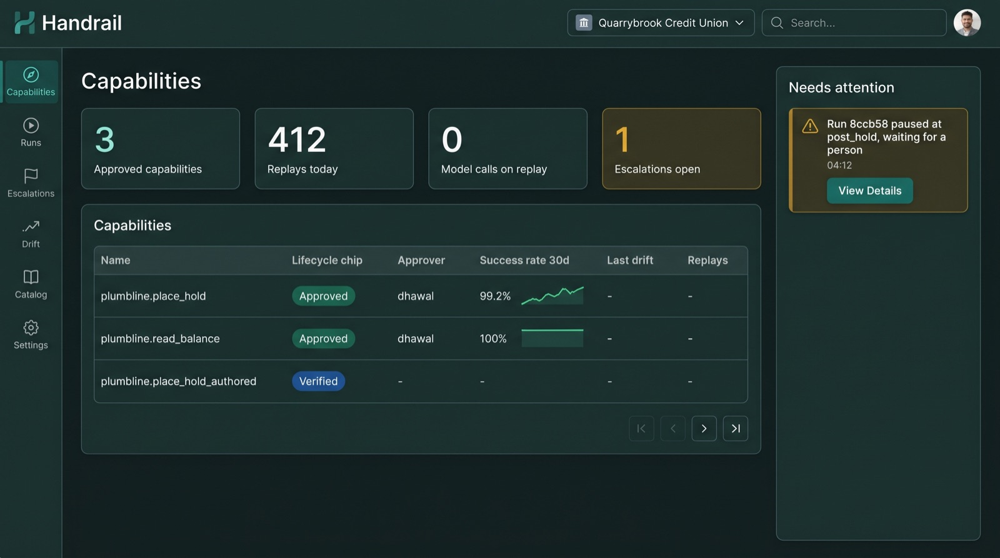
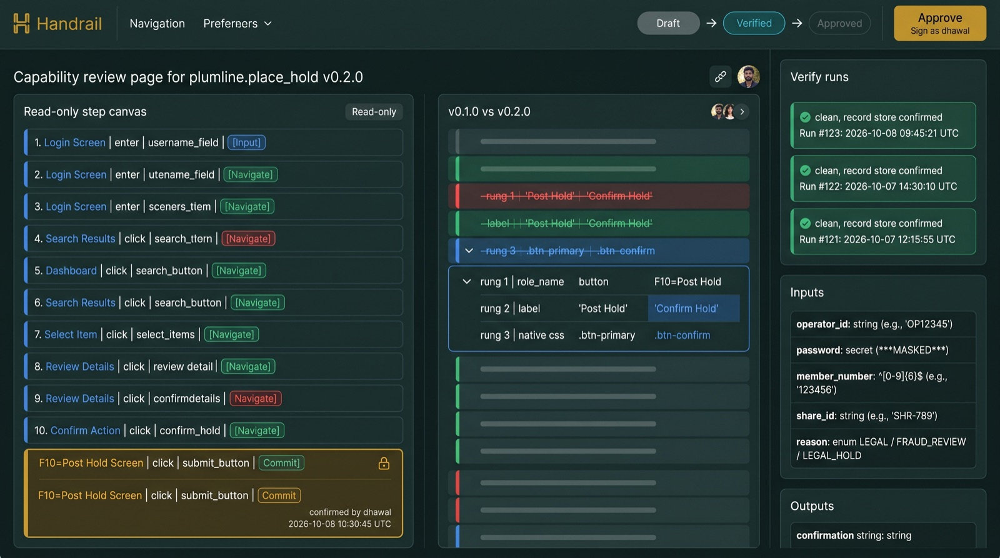
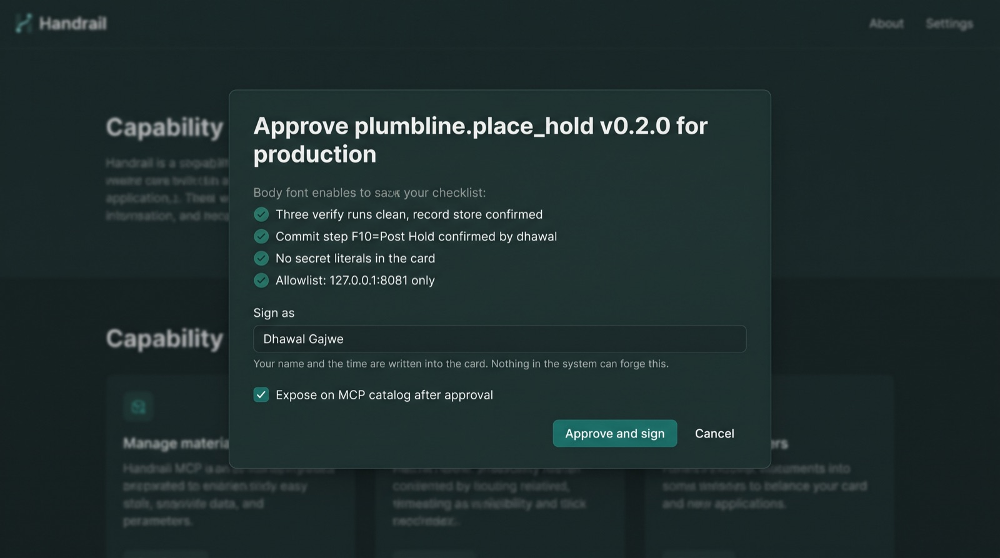
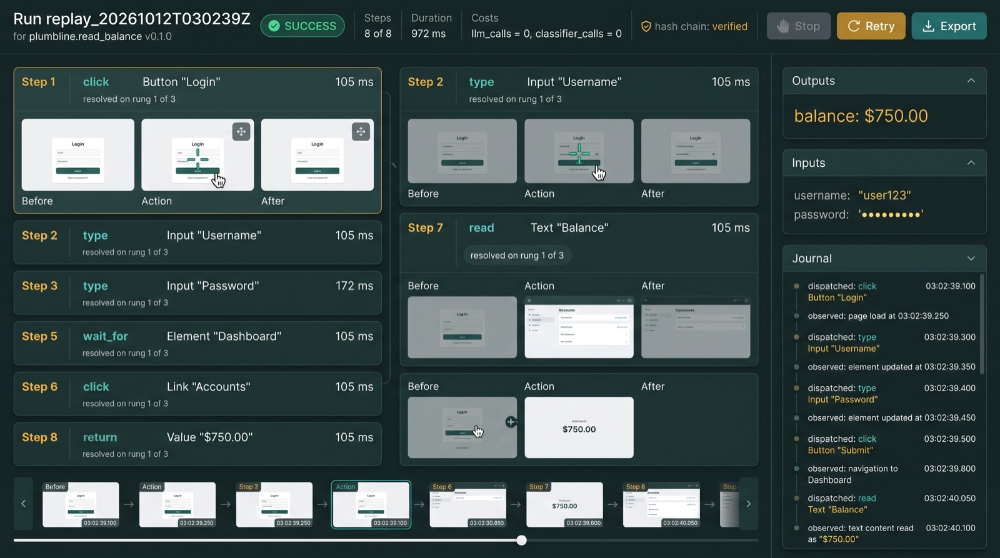
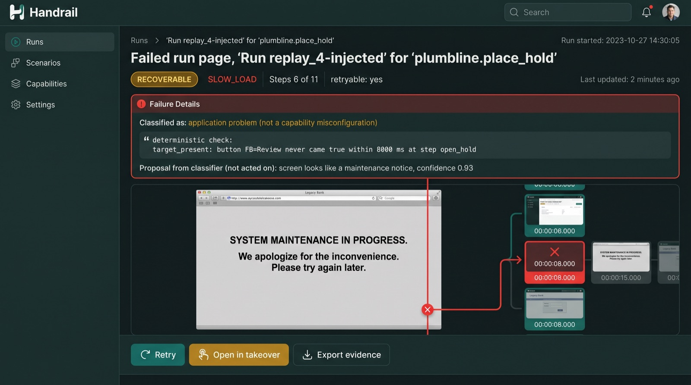
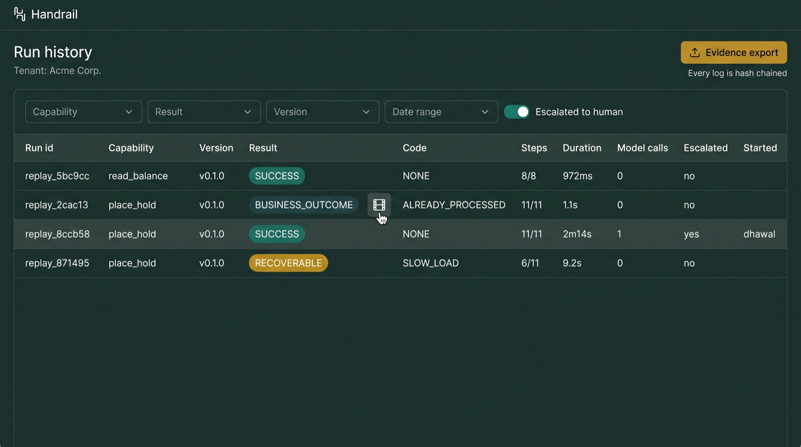
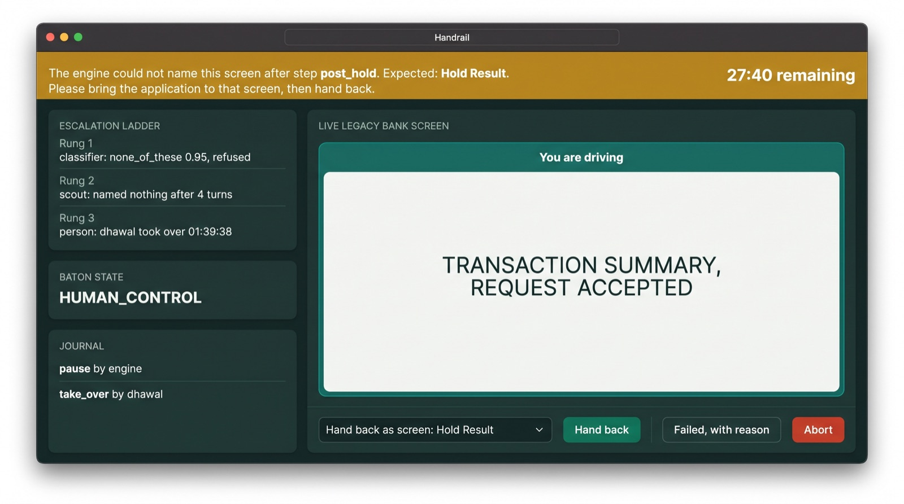

Eleven screens, in the order a person meets them. Concept art, generated 2026-10-31 from the product research; labels inside the images are approximate. Palette and layout are the proposal; nothing here is built.

1. Home Where you land. Four numbers that matter: approved capabilities, replays today, model calls on replay (always 0), escalations open. Table of capabilities with lifecycle chip, approver, success rate sparkline, last drift. Right rail: what needs a person now.2. Author The one evening the model drives. Left: the goal and a step rail filling with one card per action, each with a screenshot and an effect chip. Right: the live legacy screen, read-only to you, with the control the model is about to use outlined. Bottom: evidence drawer, chain state, llm_calls counting up. Big Stop, always visible.3. Mark the commits Nobody ships this. At the end of authoring every button press is shown and you say which ones cannot be undone. A commit card locks, carries your name, and later needs confirmation to delete.

4. Review the capability The compiled card, read only. Lifecycle stepper draft, verified, approved. Version diff in three colours down to the locator ladder. The three verify runs linked. Typed inputs and outputs. Approve button signs as you.

5. Approve A checklist, not a form: three clean plates, every commit confirmed by name, no secret literals, allowlist shown. Your name and time go into the card. Optional: expose on the catalog.

6. A run One replay. Status bar carries the four things no competitor can show: llm_calls = 0, hash chain verified, steps completed of total, Retry that knows about commits. Per-step before, action, after. Outputs, masked inputs, journal on the right. Filmstrip below.

7. A failed run First line answers the question: application problem or capability misconfiguration. Then the exact check that failed, quoted. Then the classifier's proposal, labelled as a proposal. The screenshot at the moment it broke.

8. Run history Every run, with result chips in the four categories, version on every row, model calls, who escalated. Filters. Evidence export.

9. Takeover The telephone. Brass banner with the engine's instructions and a timer. Ladder on the left shows what was tried. The live screen gets a border that says who is driving. Hand back must name a screen the run was hoping for. Every exchange goes into the journal.10. Drift Which locator rung found each control on each run, the healing rows with a correct or not toggle, the classifier's calibration table. Drift raised even when the run succeeded.11. Catalog What other agents see over MCP. Only approved cards. Read or Write badge from the commit steps, approver and date, success rate, last drift, Try it, Export. A card cannot be listed without a description and a reliability figure.